1. JR九州103系 jr-kyusyu-103
映射线路：筑豊本線、香椎線、篠栗線
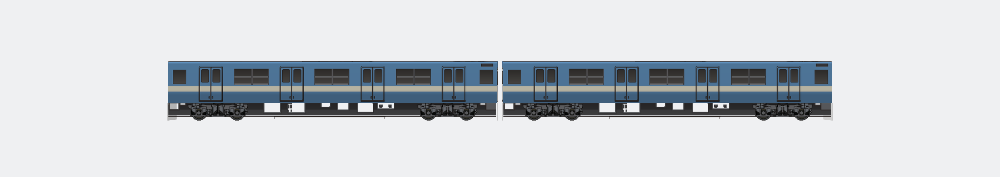


2. JR九州817系 jr-kyusyu-817
映射线路：長崎本線

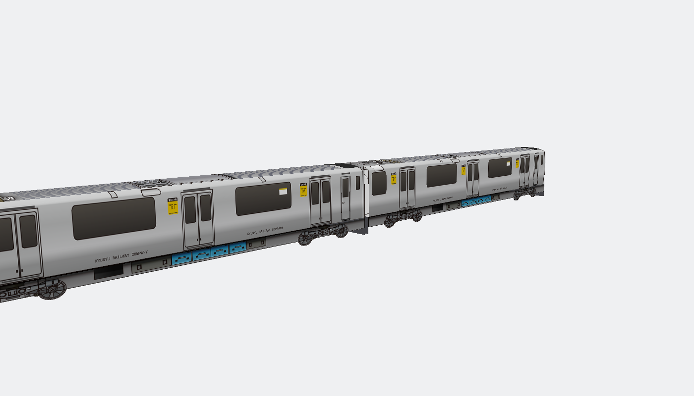

3. 岡山電気軌道9200形 MOMO2 okayamadenki-9200
映射线路：東山本線、清輝橋線


4. 近江鉄道900形 oumi-900
映射线路：近江鉄道本線、八日市線、多賀線


5. 近鉄16000系 kintetsu-16000
映射线路：南大阪線、吉野線

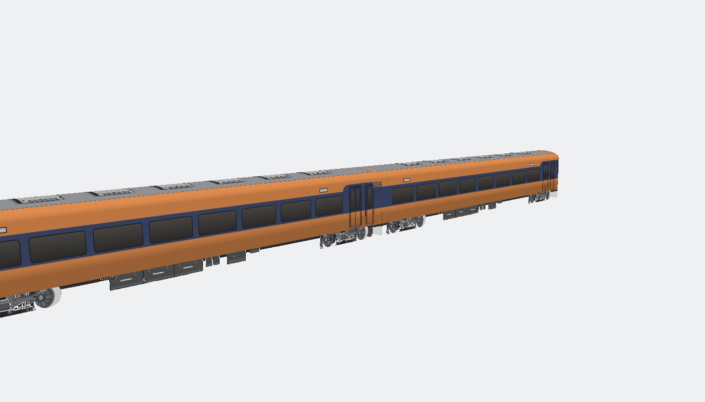
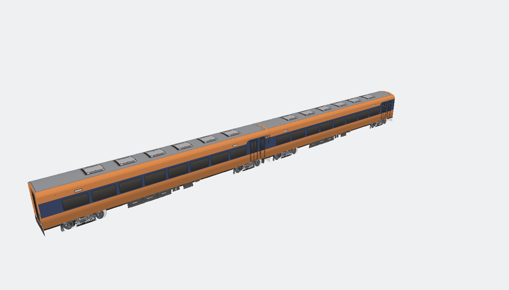
6. 阪急8000系 hankyu-8000
映射线路：箕面線

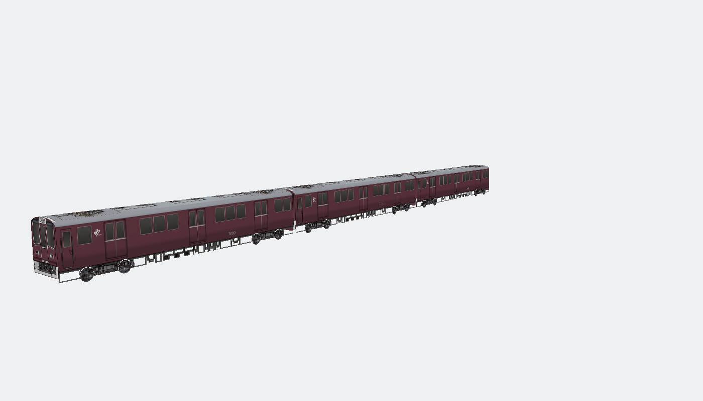
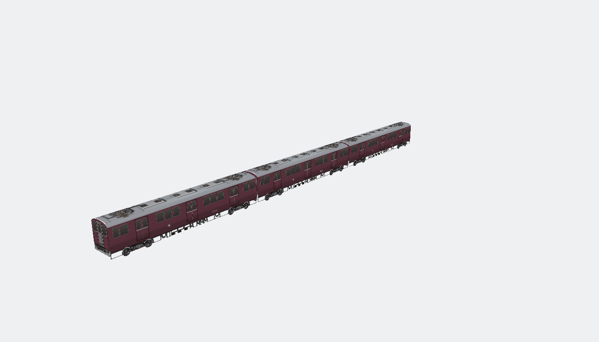
7. 京阪600形 keihan-600
映射线路：石山坂本線


8. 伊予鉄610系 iyotetu-610
映射线路：高浜線、横河原線
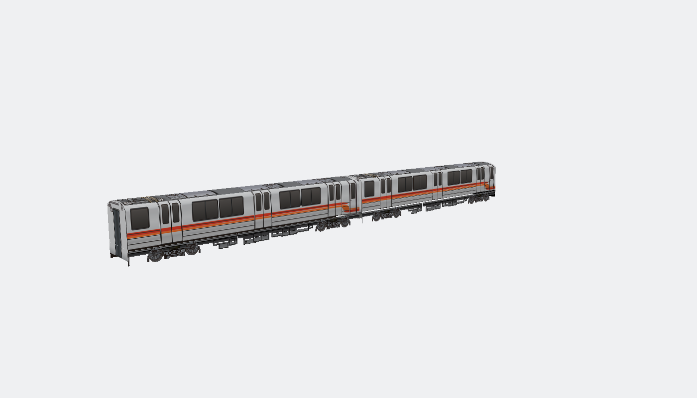
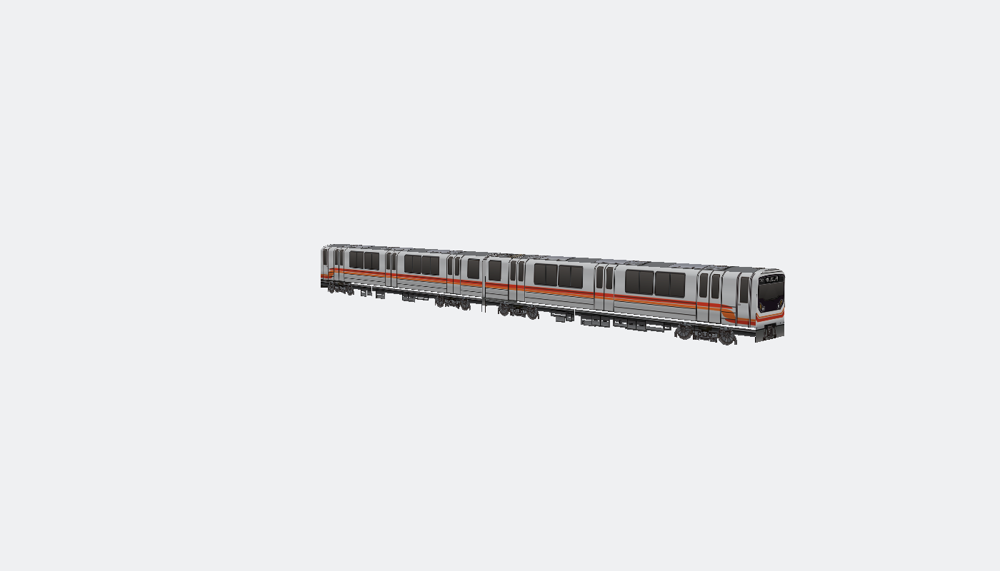
9. 富山ライトレールTLR0600形 toyamalrt-tlr0600
映射线路：富山港線、富山駅南北接続線
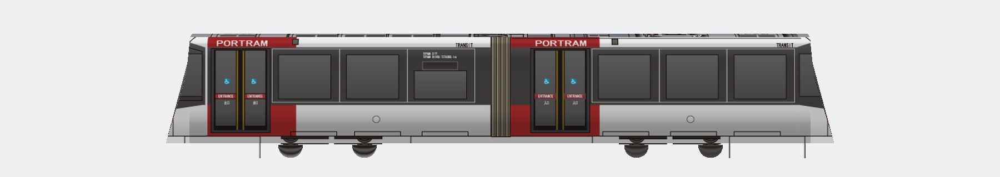


10. 愛知高速交通リニモ100形 linimo-100
映射线路：東部丘陵線


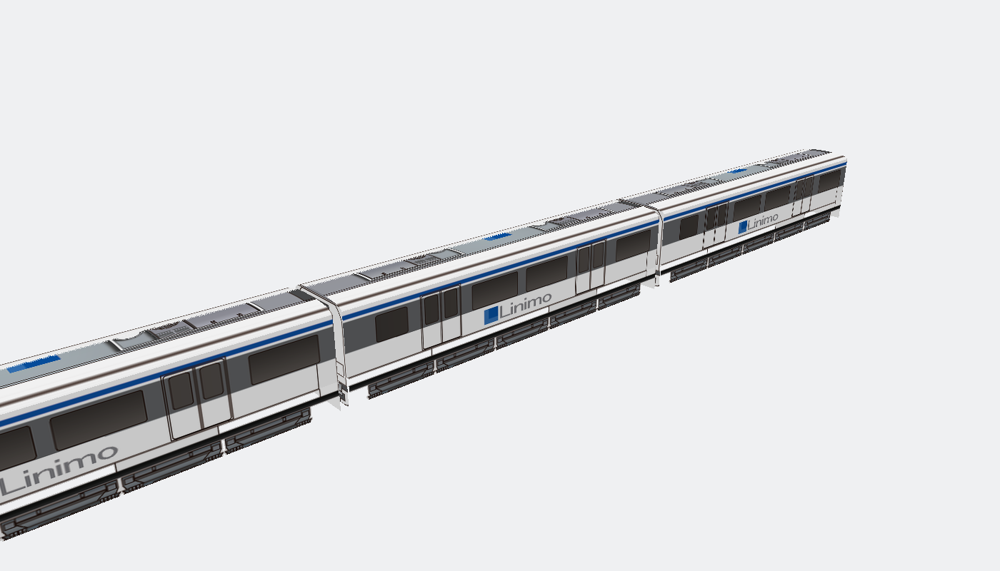
11. 宇都宮ライトレールHU300形 utsunomiya-hu300
映射线路：宇都宮芳賀ライトレール線


12. JR西日本キハ47形 jr-west-kiha47
映射线路：津山線、吉備線


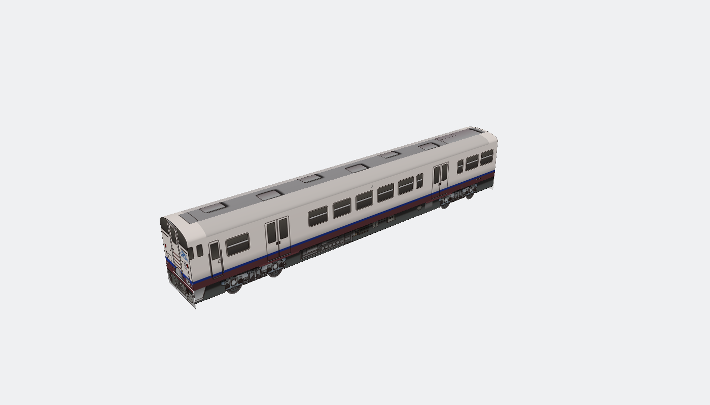
13. JR九州キハ140形 jr-kyusyu-kiha140
映射线路：肥薩線、吉都線、三角線

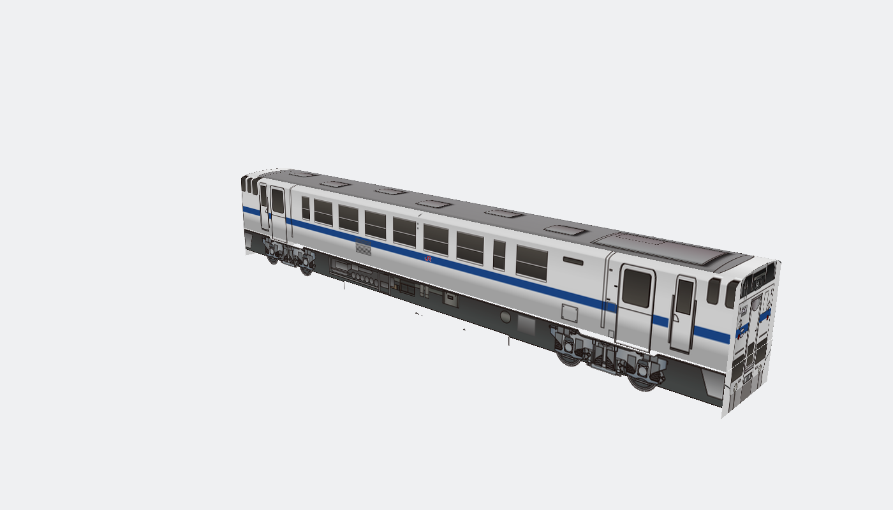
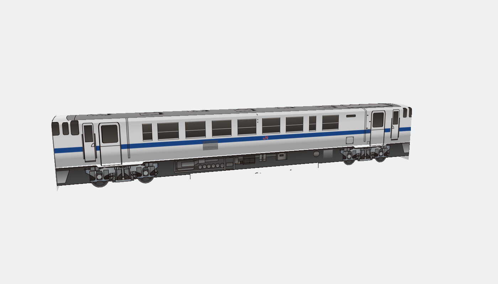
14. 箱根登山鉄道3000形 hakonetozan-3000
映射线路：箱根登山鉄道線
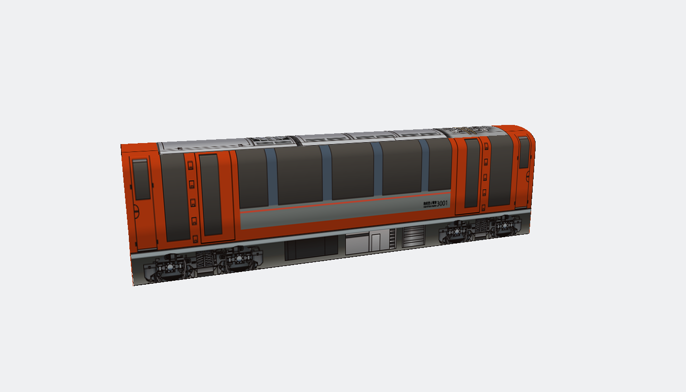
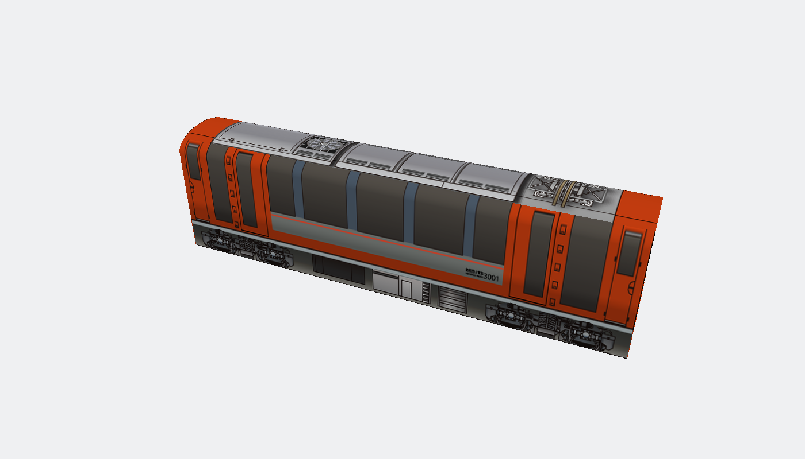
15. 神戸電鉄5000系 kobedentetu-5000
映射线路：有馬線、神鉄三田線、粟生線、公園都市線
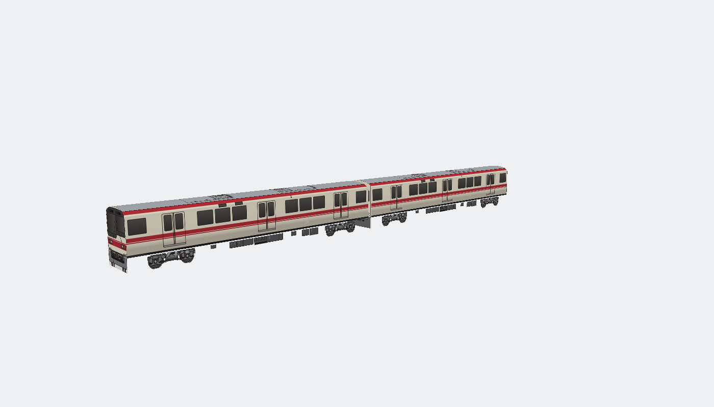

16. 近鉄生駒鋼索線（缆车） kintetsu-ikomocable
映射线路：生駒鋼索線

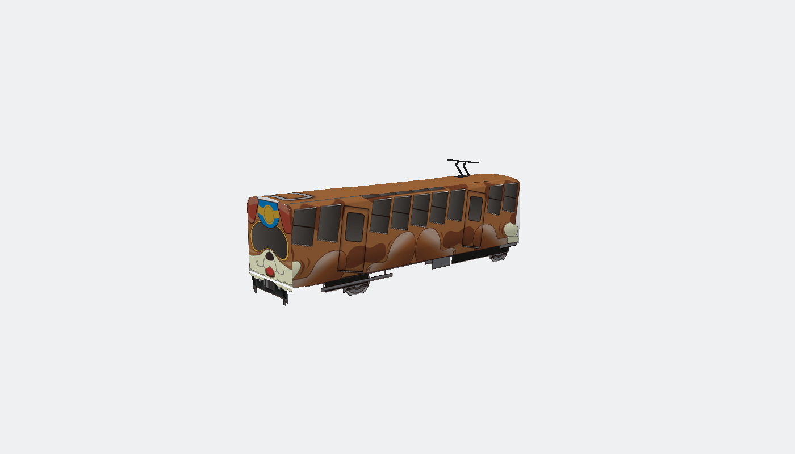
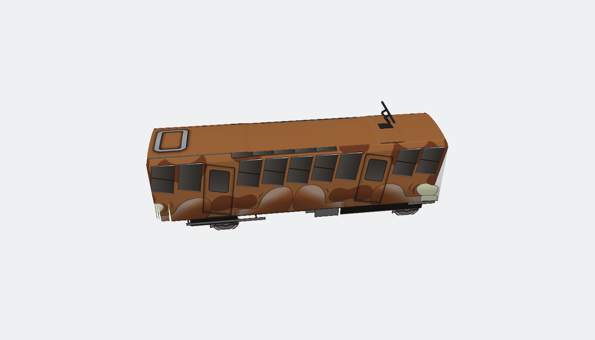
17. こどもの国線Y000形 kodomonokuni-y000
映射线路：こどもの国線